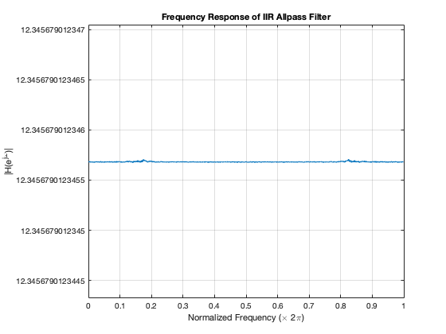
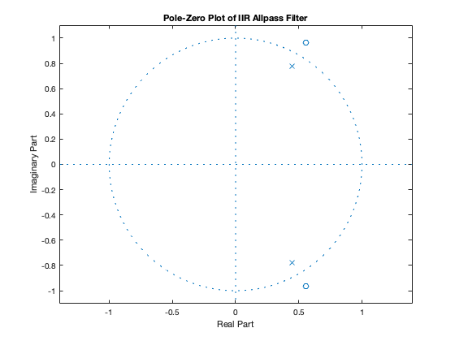
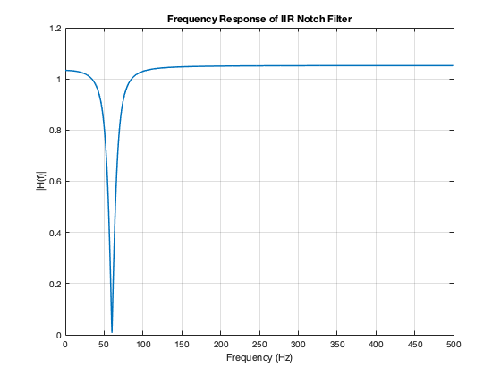
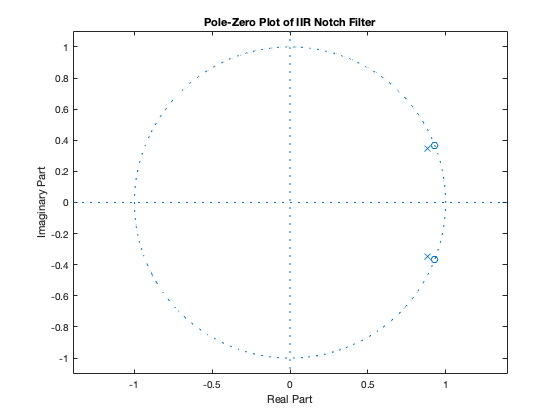
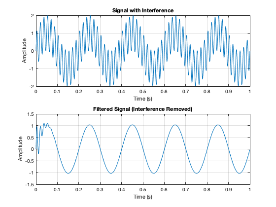
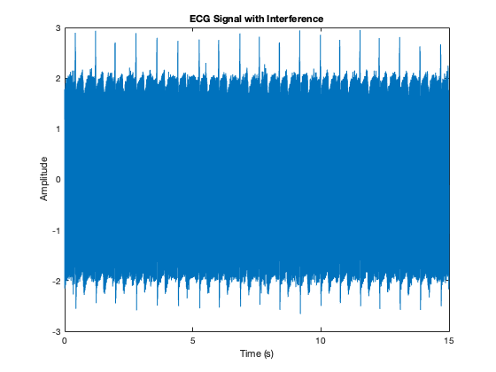
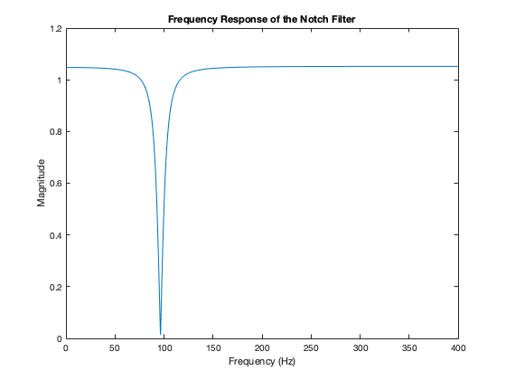
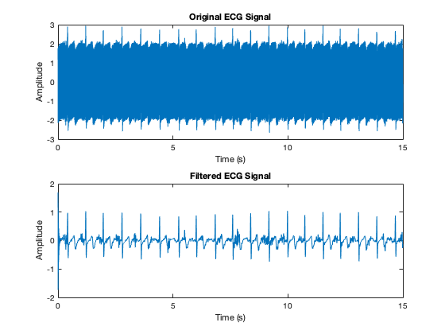
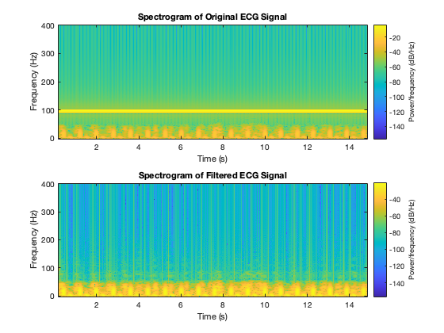

2 Lab Exercise
Contents
2.1 IIR Allpass Filter
Parameters for IIR Allpass Filter
r = 0.9; theta = pi/3; % Angle in radians % Calculate poles and zeros zero1 = (1/r) * exp(1j * theta); % Zero location (conjugate pair) zero2 = (1/r) * exp(-1j * theta); % Zero location pole1 = r * exp(1j * theta); % Pole location (conjugate pair) pole2 = r * exp(-1j * theta); % Pole location % Numerator and denominator coefficients numerator = poly([zero1, zero2]); denominator = poly([pole1, pole2]); % Gain adjustment to ensure |H(e^jw)| = 10 G = 10; % Frequency response of the filter [H, w] = freqz(G * numerator, denominator, 1024, 'whole'); % Plot frequency response figure(1); plot(w/(2*pi), abs(H), 'LineWidth', 1.5); grid on; title('Frequency Response of IIR Allpass Filter'); xlabel('Normalized Frequency (\times 2\pi)'); ylabel('|H(e^{j\omega})|'); % Plot pole-zero diagram figure(2); zplane(numerator, denominator); title('Pole-Zero Plot of IIR Allpass Filter'); % Display the filter coefficients disp('Numerator coefficients:'); disp(numerator); disp('Denominator coefficients:'); disp(denominator);
Numerator coefficients:
1.0000 -1.1111 1.2346
Denominator coefficients:
1.0000 -0.9000 0.8100
  2.2 IIR Notch Filters
% Parameters for IIR Notch Filter fs = 1000; fint = 60; r = 0.95; theta = 2 * pi * fint / fs; % Angle corresponding to interference frequency % Calculate poles and zeros zero1 = exp(1j * theta); % Zero location (complex conjugate pair) zero2 = exp(-1j * theta); % Zero location pole1 = r * exp(1j * theta); % Pole location (complex conjugate pair) pole2 = r * exp(-1j * theta); % Pole location % Numerator and denominator coefficients numerator = poly([zero1, zero2]); denominator = poly([pole1, pole2]); % Frequency response of the notch filter [H, w] = freqz(numerator, denominator, 1024, fs); % Plot frequency response figure(3); plot(w, abs(H), 'LineWidth', 1.5); grid on; title('Frequency Response of IIR Notch Filter'); xlabel('Frequency (Hz)'); ylabel('|H(f)|'); xlim([0, fs/2]); % Plot pole-zero diagram figure(4); zplane(numerator, denominator); title('Pole-Zero Plot of IIR Notch Filter'); % Apply the filter to a test signal t = 0:1/fs:1; % Time vector clean_signal = sin(2 * pi * 5 * t); % 5 Hz sine wave interference = sin(2 * pi * fint * t); % 60 Hz interference signal_with_interference = clean_signal + interference; % Filter the signal filtered_signal = filter(numerator, denominator, signal_with_interference); % Plot time-domain signals figure(5); subplot(2, 1, 1); plot(t, signal_with_interference); title('Signal with Interference'); xlabel('Time (s)'); ylabel('Amplitude'); grid on; subplot(2, 1, 2); plot(t, filtered_signal); title('Filtered Signal (Interference Removed)'); xlabel('Time (s)'); ylabel('Amplitude'); grid on; % Display the filter coefficients disp('Numerator coefficients:'); disp(numerator); disp('Denominator coefficients:'); disp(denominator);
Numerator coefficients:
1.0000 -1.8596 1.0000
Denominator coefficients:
1.0000 -1.7666 0.9025
   2.4 Notch Filter Removes Sinusoidal Interference
Step (a): Generate ECG Signal with Interference
IDstring = 'u1499462'; dur = 15; [ecgsig, fs, fint] = ECGmake(IDstring, dur); % Plot the original signal with interference figure(6); plot((0:length(ecgsig)-1)/fs, ecgsig); title('ECG Signal with Interference'); xlabel('Time (s)'); ylabel('Amplitude'); % Step (b): Design the IIR Notch Filter r = 0.95; % Pole radius theta = 2 * pi * fint / fs; % Angle of the pole and zero poles = r * [exp(1j*theta); exp(-1j*theta)]; % Poles as column vector zeros = [exp(1j*theta); exp(-1j*theta)]; % Zeros as column vector % Convert poles and zeros to filter coefficients [num, den] = zp2tf(zeros, poles, 1); % Step (c): Frequency Response of Notch Filter [H, f] = freqz(num, den, 1024, fs); % Frequency response figure(7); plot(f, abs(H)); title('Frequency Response of the Notch Filter'); xlabel('Frequency (Hz)'); ylabel('Magnitude'); % Step (d): Filter Coefficients disp('Numerator Coefficients (b):'); disp(num); disp('Denominator Coefficients (a):'); disp(den); % Step (e): Apply Notch Filter to ECG Signal filtered_ecg = filter(num, den, ecgsig); % Plot original and filtered signals figure(8); subplot(2, 1, 1); plot((0:length(ecgsig)-1)/fs, ecgsig); title('Original ECG Signal'); xlabel('Time (s)'); ylabel('Amplitude'); subplot(2, 1, 2); plot((0:length(filtered_ecg)-1)/fs, filtered_ecg); title('Filtered ECG Signal'); xlabel('Time (s)'); ylabel('Amplitude'); % Step (f): Spectrograms Before and After Filtering figure(9); subplot(2, 1, 1); spectrogram(ecgsig, 256, 250, 256, fs, 'yaxis'); title('Spectrogram of Original ECG Signal'); subplot(2, 1, 2); spectrogram(filtered_ecg, 256, 250, 256, fs, 'yaxis'); title('Spectrogram of Filtered ECG Signal');
fint =
96.4000
fs =
800
Numerator Coefficients (b):
1.0000 -1.4536 1.0000
Denominator Coefficients (a):
1.0000 -1.3809 0.9025
   